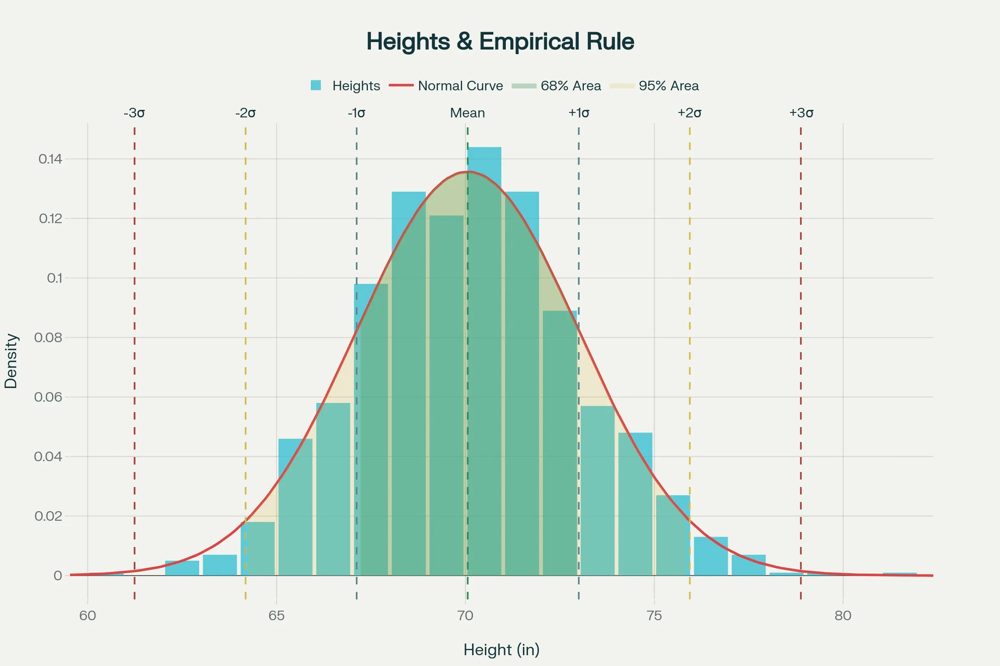
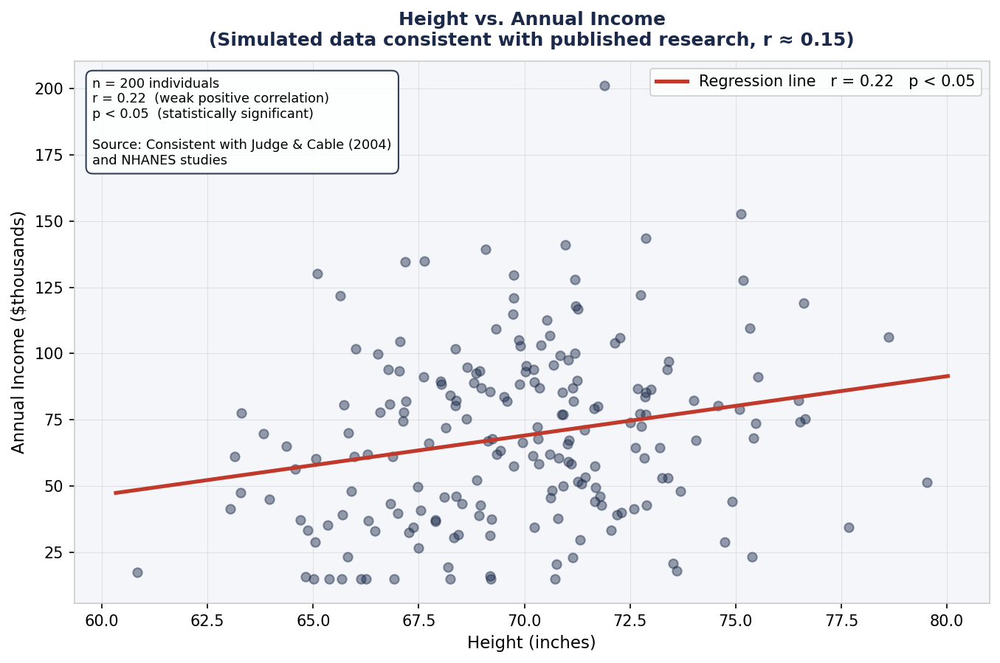
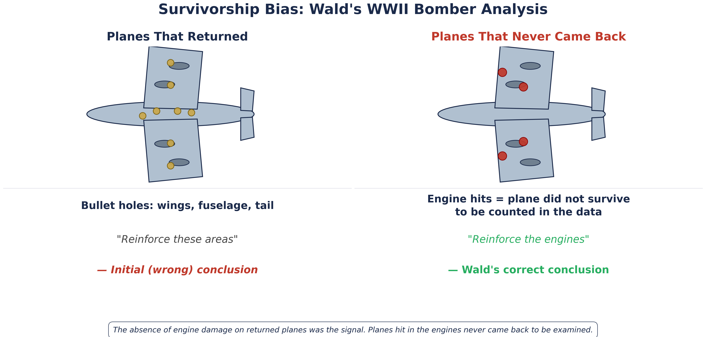

What Numbers Are Telling You — and What They Aren't
Pete Halbeisen · Elementary Statistics
Today's Topics
1
The Observer EffectYour expectations change what you measure
2
Do Storks Deliver Babies?Correlation is not causation
3
Okun's LawReal correlation in the news every week
4
The Shape of IncomeWhy mean and median tell different stories
5
Survivorship BiasThe data you can't see is often the most important
6
The Birthday ProblemWhy our probability instinct is usually wrong
Section 1 — Psychology
The Observer Effect
When someone knows what result they expect, they can unconsciously influence what they measure — and what the subject does. Good experiments are designed to prevent this.
Clever Hans (1907)
Wilhelm von Osten with Clever Hans, Berlin 1907. The chalkboard shows arithmetic problems Hans was said to solve by tapping his hoof.
Hans appeared to solve arithmetic, spell words, identify musical notes — all by tapping his hoof. Scientific committees found no trickery.
Psychologist Oskar Pfungst ran one decisive test: he varied whether the questioner knew the answer.
Questioner knows → Hans correct 89% of the time
Questioner does not know → Hans correct 6% of the time
Hans was reading involuntary micro-cues in body language. He was not doing math. He was reading people.
The Fix: Blinded Experiments
Left: without blinding, Hans reads unconscious cues. Right: blinded — performance collapses to chance.
What the numbers are telling you: When an experiment is properly blinded, the result reflects what is actually happening — not what the observer expects.
What they aren't telling you: An unblinded result may be measuring the observer's expectations just as much as the phenomenon itself. This applies to drug trials, AI training data, and any situation where the measurer knows the desired outcome.
Poker: Controlling Information Leakage
A championship player at the World Series of Poker. Every piece of attire is a countermeasure against the observer effect.
Championship poker is not just about the cards. It is about controlling what information leaks from you to the people watching you.
Professionals have independently reinvented experimental blinding as competitive strategy:
Mirrored sunglasses — hide pupil dilation and eye movement, which involuntarily signal excitement or concern about a hand
Consistent bet timing — a fast bet when holding a strong hand and a slow bet when bluffing is a tell. Pros use the same deliberate pause every single time regardless of hand strength
Deliberate false tells — consciously planting an observable behavior that signals the opposite of the truth. Reverse-engineering the Clever Hans effect
Neutral attire — hoods, hat brims, and scarves mask micro-expressions around the jaw and neck that are difficult to consciously control
The goal is identical to Pfungst's blinded condition: make your observable behavior carry zero information about your private state.
Artificial Intelligence: The Most Impressionable Subject of All
The AI training pipeline. Bias enters at the data labeling stage and compounds through feedback loops across multiple training cycles.
AI models have no intrinsic understanding — they learn entirely from what they are shown. This makes them the most impressionable subjects ever created.
Three mechanisms through which bias enters:
Labeled training data — if the humans who labeled the data held systematic expectations, the model learns those expectations, not the underlying truth
Feedback loops — model outputs influence what users see; user behavior feeds back into future training data; bias compounds with each cycle
Benchmark design — models evaluated on benchmarks assembled by researchers with specific expectations may learn to pass the benchmark rather than acquire genuine capability
What the numbers are telling you: When an experiment is properly blinded — or an AI is trained on diverse, audited data — the result reflects what is actually happening.
What they aren't telling you: An unblinded result, or a model trained on biased data, may be measuring expectations rather than reality. Hans learned to read one questioner. A biased AI reflects those expectations back to millions of people simultaneously.
Discussion: When an AI confidently gives you a wrong answer — what does the Clever Hans story suggest about where that confidence came from?
Section 1 — Quick Check
A pharmaceutical company runs a trial where doctors know which patients are receiving the real drug. What problem does this create?
Section 2 — Biological Statistics
Do Storks Deliver Babies?
Two things can be strongly correlated — even with a statistically significant result — and have absolutely no causal connection. A hidden third variable can explain the whole thing.
A Real Study. A Real Result.
Stork breeding pairs vs. human birth rate, 17 European countries. Matthews (2000), Teaching Statistics.
What the numbers are telling you: There is a real, statistically significant positive correlation (r = 0.62) between stork populations and human birth rates across European countries.
What they aren't telling you: Neither causes the other. Both are driven by country size. A correlation number alone never tells you whether a relationship is causal — that requires knowing the context and ruling out confounders.
Section 2 — Quick Check
A study finds that students who eat breakfast get better grades. What should a researcher investigate before concluding that breakfast improves grades?
Section 3 — Economics
Okun's Law
Some correlations are strong, well-documented, and practically useful — even when they are not perfect. Learning to read a scatter plot tells you as much as the number itself.
GDP Growth vs. Unemployment
Federal Reserve Bank of San Francisco. Each point is one quarter of U.S. data. Arrows trace the 2007-09 recession in real time vs. hindsight.
Arthur Okun, 1962: when the economy grows, unemployment falls. When it shrinks, unemployment rises.
⅓ to ½ ptUnemployment change per 1% GDP change
−0.5 to −0.9Typical r range
Moderate to strong negative correlation — consistent across six decades of U.S. data.
Note the scatter. The relationship is real but not mechanical.
The Lag: Why It's Messier Than It Looks
GDP growth (navy) and unemployment rate (gold dashed) 1990-2023. Unemployment peaks after GDP has already started recovering.
What the numbers are telling you: GDP and unemployment move together in a consistent, measurable pattern that holds across decades.
What they aren't telling you: The relationship is not instant. The lag means the job market can feel broken long after the economy has turned around — and both the economist and the unemployed worker can be right at the same time.
Section 4 — Distributions
The Shape of Income
The shape of a distribution determines which summary statistics are honest. In a right-skewed distribution, the mean and median tell very different stories — and people in power know which one to reach for.
Two Shapes, Two Very Different Stories

Adult male height: symmetric bell curve. Mean, median, and mode all at ~70 inches. The 68-95-99.7 rule applies cleanly.
U.S. household income: right-skewed. Median ~$83,730 (red line). Mean is substantially higher — pulled by the long right tail.
Mean vs. Median — Why It Matters
A company: 9 workers at $40,000, one CEO at $1,000,000.
Measure
Value
What it represents
Mean salary
$136,000
Pulled up by the CEO
Median salary
$40,000
What a typical worker earns
In a right-skewed distribution:
Most common → Median → Mean
If mean > median: right-skewed. Every time you see income data — ask: mean or median?
What the numbers are telling you: Median household income is ~$83,730. The distribution is right-skewed with a long tail.
What they aren't telling you: A mean income figure isn't telling you what most people earn. It reflects everyone including a small number of ultra-high earners.
Bonus: Do Height and Income Correlate?

Simulated data consistent with published research. Judge & Cable (2004): someone 6 feet tall earns ~$166,000 more over a 30-year career than someone 5'5".
0.13–0.20Typical r across studies (weak positive)
~2%Of income variation explained by height (r²)
Statistically significant — but practically modest. And the confounding variable? Childhood nutrition and family income correlate with both height and adult earnings.
TI-84: Running a Correlation Analysis
Steps
Turn on diagnostics (once only) 2nd + 0 → DiagnosticOn → Enter
Enter your data STAT → 1 (Edit) Heights in L1, incomes in L2
Run the regression STAT → CALC → 4: LinReg(ax+b) Select L1, L2 → Enter
Read the output r = correlation | r² = variance explained
What to expect
Output
Meaning
a
Dollars gained per inch of height
b
Y-intercept
r
~+0.13 to +0.20
r²
~0.02 (2% explained)
A statistically significant result is not the same as a practically important one.
Section 5 — Research Methods
Survivorship Bias
We systematically observe only the cases that survived, succeeded, or made it through some filter. The missing cases are often where the real lesson lives.
Abraham Wald and the WWII Bombers

Returned planes showed heavy damage to wings and fuselage. Wald's insight: those were the survivable hits.
Bombers were being shot down at an unsustainable rate. Engineers mapped bullet holes on returned planes — mostly wings, fuselage, and tail. Proposal: reinforce those areas.
Mathematician Abraham Wald pointed out this was exactly backwards.
Holes in wings/fuselage = survivable hits
Engine hits = plane never came back
No engine damage on returned planes = that's where the armor needs to go
The absence of data was the data.
Survivorship Bias in Investing
Left: of 355 equity funds in 2000, fewer than half survived to 2023. Right: surviving funds show much higher returns — poor performers erased from the advertised history.
What the numbers are telling you: The reported fund performance figures show the record of funds that still exist.
What they aren't telling you: Anything about the funds that failed. Studies estimate survivorship bias inflates reported mutual fund performance by 1-3 percentage points per year — which compounds into a dramatically misleading picture over time.
Section 5 — Quick Check
A business school publishes the average starting salary of its graduates as $85,000. What group is most likely missing from that figure?
Section 6 — Probability
The Birthday Problem
Human probability intuition is deeply unreliable — especially when it comes to coincidences. The math consistently shows that surprising things happen far more often than we expect.
What's Your Guess?
In a room of 30 people, what is the probability that at least two share a birthday?
70.6%probability of at least one shared birthday
Drag the slider. At what number does it cross 50%?
Why Our Intuition Fails
The curve crosses 50% at just 23 people — far sooner than almost anyone guesses.
People
Probability
10
12%
20
41%
23
50%
30
70%
40
89%
57
99%
With 30 people there are 435 possible pairs. Our intuition asks: "what's the chance someone shares my birthday?" The real question is: "what's the chance any two people share any birthday?"
What the numbers are telling you: In a group of 23, a shared birthday is more likely than not.
What they aren't telling you: This isn't magic. The number of possible pairs grows much faster than the number of people — and that drives the probability up fast.
Live Demo — Try It Right Now
Go around the room. Say your birthday out loud. Call "match!" when you hear one repeated.
70.6%chance of a match in this class
If no match occurs — that happens about 30% of the time in a class of 30. Run this in 10 classes and you'll see a match in roughly 7 of them.
Six Questions You Now Know to Ask
1. Was the measurement blinded?Could the observer's expectations have influenced the result?
2. Is this a correlation?What might a hidden third variable be?
3. How strong is the relationship?How much scatter is there around the regression line?
4. Mean or median?What shape is the underlying distribution?
5. Am I only seeing survivors?What happened to the cases not in this data?
6. How many chances were there?Is this coincidence as surprising as it looks?
You don't need a calculator to ask these questions. You need the vocabulary you've built this semester.
"A statistical thinker is not someone who distrusts numbers. It is someone who knows exactly what to ask before trusting them."
Pete Halbeisen · Real-World Applications of Statistics